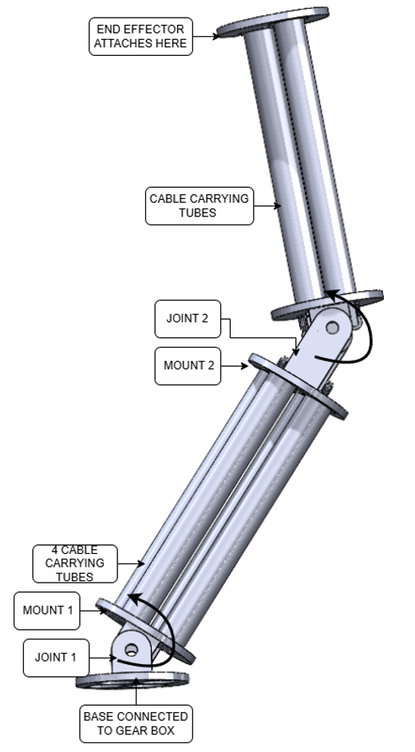
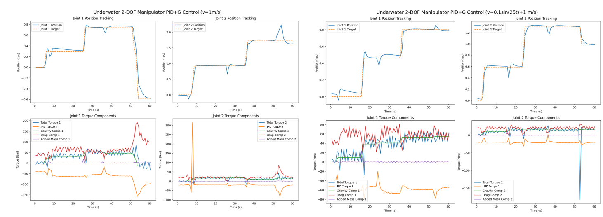

An industry-collaborative project with Oceaneering to design a low-inertia underwater manipulator. A complete 2-DOF cable-driven manipulator was designed in a modular manner so the design can scale to additional degrees of freedom, with a controller validated in simulation to account for dynamic underwater loads such as drag and added mass.
Underwater manipulators are critical for pipeline inspection and maintenance of offshore and nuclear facilities. More than 30% of the total cost of energy for offshore wind power comes from operation and maintenance expenses — costs that can be substantially reduced by deploying underwater robots with manipulators instead of human divers. Beyond cost, there's also a human safety dimension: divers are routinely put at risk in harsh underwater conditions that robotic solutions could avoid entirely.
Most underwater manipulators currently in operation with high torque capacity are hydraulic. Hydraulic systems bring a host of problems: reliability issues from seal failures, bulky form factors that require dedicated hydraulic equipment, and latency or jerkiness that prevents their adoption in high-speed, precise manipulation tasks.
Manipulators using conventional electric motors have lower inertia and therefore lower energy requirements, can integrate advanced control schemes, and are generally more cost-effective. However, electric actuation introduces its own challenges — waterproofing difficulty and distal loading, since motors are typically placed directly at the joints.
This project's proposed solution tackles both problems simultaneously: a low-inertia design with weight concentrated at the base, and reduced waterproofing requirements achieved through a cable-driven transmission mechanism. More capable arms are typically heavier at the distal end, making them harder to control under hydrodynamic disturbance — by moving actuators proximally, cable-driven mechanisms dramatically reduce distal inertia and enable faster, more precise motion underwater.
The key features of the designed manipulator are planar joints and a modular structure — the design can easily extend to more links since cable routing is separated using dedicated cable-carrying tubes. Cable routing is arranged so that joints remain planar, which also simplifies waterproofing at each joint. The initial prototype is designed for a payload of 1.5 kg, with a factor of safety of 3 at joint 1 and 2.5 at joint 2 to handle high dynamic loading environments.

Manipulator CAD design

Control performance under disturbances of steady current and osciallting current